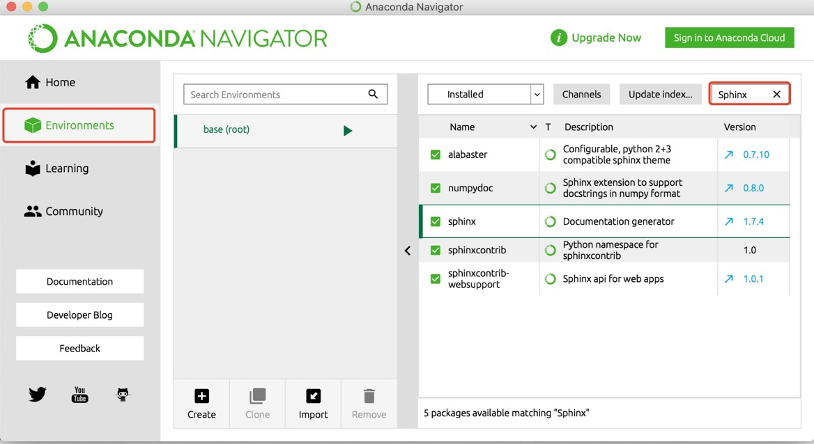
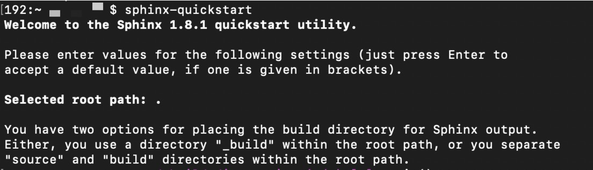

安装 Sphinx
通过命令行安装 Sphinx
这一步骤的前提是配置好 Python 环境。Mac 用户通过终端进行安装，Windows 用户通过cmd进行安装，输入 pip3 install sphinx即可。
通过 Anaconda 安装 Sphinx
打开 Anaconda，如下图所示，在 Environments 中搜索 Sphinx，即可进行相应的安装操作。

检查 Sphinx 安装状况
在命令行工具中输入 sphinx-quickstart，如下图，会显示 Sphinx 快速开始的欢迎语及版本信息，看到这个信息表示 Sphinx 已经安装成功！
